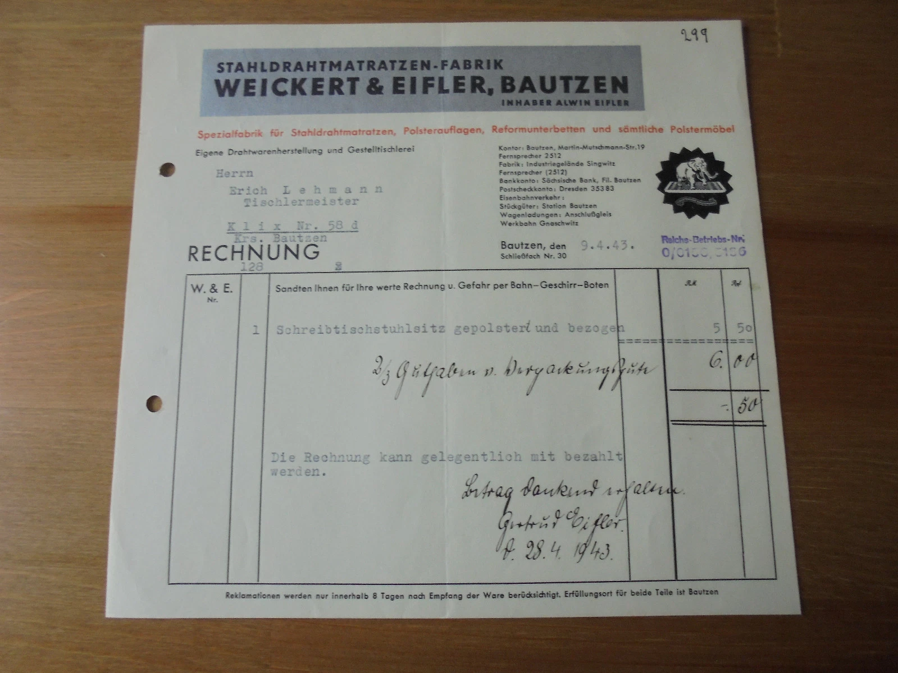
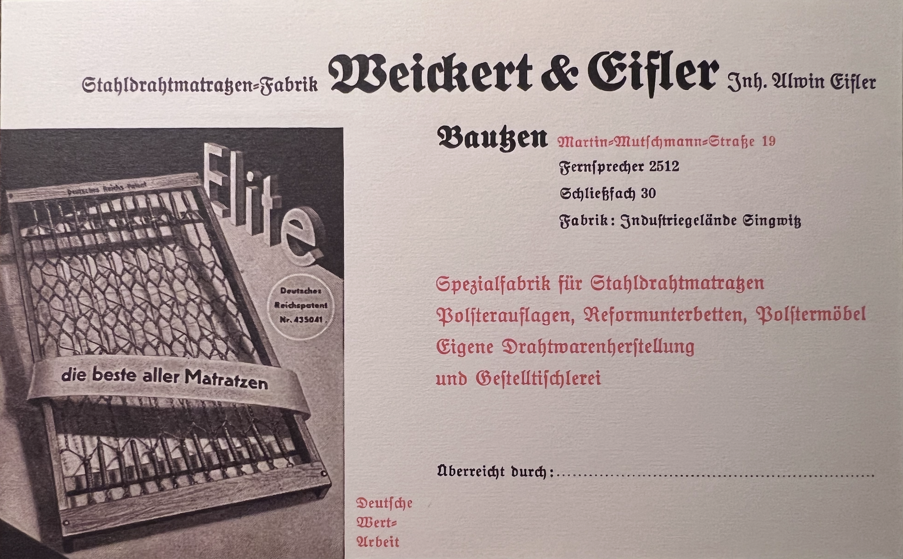

Sometime before the First World War, a man named Weickert and a man named Eifler set up a steel wire mattress factory in Bautzen, in the Upper Lusatia region of eastern Saxony. They called it Stahldrahtmatratzen-Fabrik Weickert & Eifler. Their flagship product was the “Elite,” a sprung steel-wire mattress sold under the slogan die beste aller Matratzen, “the best of all mattresses,” and protected under German Reich patent number 435041. The trademark was an elephant balanced on a mattress, demonstrating the obvious: that a wire frame done right will hold whatever you put on it.
By the 1930s the firm was held by Alwin Eifler alone. Ernst Alwin Eifler, born 1892 in the Lusatian village of Sohland an der Spree, married 1926 to Gertrud Becker of Dresden, and the maternal grandfather of Thomas Kohlmann. The firm's office was at Martin-Mutschmann-Straße 19 in central Bautzen, a street renamed after the Gauleiter of Saxony during the Nazi years and reverted after 1945. The factory itself, with its own rail siding, sat on the industrial estate at Singwitz, south of the town.
One thin slip of evidence survives from the war years: an invoice dated 9 April 1943, made out to a master carpenter in the Sorbian village of Klix, for a single upholstered desk-chair seat. Five Reichsmark fifty, plus handling. On the bottom of the invoice, in ink, Alwin's wife Gertrud has acknowledged receipt of payment three weeks later: Betrag dankend erhalten. Gertrud Eifler. d. 28.4.1943. She was 38 years old, running the books in a factory office in a Saxon town that two years later would be overrun by the Red Army.
What happened to the firm after 1945, when private manufacturers in the Soviet zone began the long process of being nationalised away, is still being researched. Alwin lived in Bautzen until 1968, when he was killed in a car accident. Their daughter Christa, Thomas's mother, made her way west and died in Starnberg in 2006.
Stahldrahtmatratzen-Fabrik Weickert & Eifler, the Steel Wire Mattress Factory Weickert & Eifler, was a specialty manufacturer based in Bautzen, in the Upper Lusatia region of Saxony. By the 1930s the firm was operating from offices at Martin-Mutschmann-Straße 19 in central Bautzen, with its factory on the Industriegelände Singwitz industrial estate to the south, served by a private rail siding (Anschlußgleis) at the Werkbahn in Gnaschwitz. Less-than-carload freight (Stückgüter) was handled at Station Bautzen; full carloads (Wagenladungen) ran on the firm's own siding. Telephone Bautzen 2512. PO box (Schließfach) 30, Bautzen. Bank: Sächsische Bank, Bautzen branch. Postal giro: Dresden 35383.
The firm specialised in Stahldrahtmatratzen, steel wire mattresses, and built its name around the “Elite” mattress, marketed as die beste aller Matratzen (“the best of all mattresses”) and protected under Deutsches Reichspatent Nr. 435041. The product range extended beyond mattresses to upholstered toppers (Polsterauflagen), “reform” base mattresses (Reformunterbetten, an early-twentieth-century hygienic-bedding category), and upholstered furniture (Polstermöbel). The firm was vertically integrated, producing its own wire goods and its own wooden frames in-house (eigene Drahtwarenherstellung und Gestelltischlerei). The trademark was an elephant standing on a mattress, demonstrating load capacity in the visual idiom of interwar German industrial advertising.
The firm's name preserves a founding partner, Weickert, who was no longer active by the 1930s. By that period the firm was held by Alwin Eifler as sole proprietor (Inhaber). The circumstances of Weickert's exit (death, retirement, or buyout) are not yet known. [PLACEHOLDER: founding date of the firm; Weickert's full identity and dates; the firm's history through the GDR period after 1945, when private manufacturing concerns in East Germany were progressively expropriated; whether the factory at Singwitz still stands.]
The Eifler in Weickert & Eifler is Ernst Alwin Eifler (1892–1968), who went by his middle name Alwin in business. He was the maternal grandfather of Thomas Kohlmann, and the father of Thomas's mother Elise Christa Kohlmann (née Eifler).
Alwin Eifler was born 7 October 1892 in Sohland an der Spree and died 18 December 1968 in Bautzen, in a fatal car accident (Schädelbasisbruch durch Autounfall). He married Gertrud Elise Becker (1905–1973) on 2 October 1926 in Dresden. By the 1930s and 1940s, the period from which the firm's surviving documents date, he was running Weickert & Eifler as sole proprietor, and Gertrud was working alongside him in the firm's office. A surviving company invoice from April 1943 carries her ink signature acknowledging payment received: Betrag dankend erhalten. Gertrud Eifler. d. 28.4.1943.

Business invoice, Weickert & Eifler, Bautzen. Dated 9 April 1943. The payment-receipt note in the lower right is signed by Gertrud Eifler (1905–1973), proprietor's wife and office bookkeeper, dated 28 April 1943. Family collection.
The couple had at least two daughters: Sigrid (b. 1927) and Christa (b. 1928), Thomas's mother. [PLACEHOLDER: whether Sigrid or Christa worked in the family firm at any point; whether the firm passed to the next generation or was nationalised under the GDR; what happened to the Singwitz factory and the Bautzen office after 1945.]
Two pieces of company-issued ephemera survive in family hands.
A pre-printed advertising letterhead from the Nazi period (1933–1945, most likely late 1930s), in the firm's full Fraktur typography, illustrated with the “Elite” mattress and its Reich patent number, naming Alwin Eifler as proprietor. It carries a blank line for Überreicht durch: (“Presented by:”), meaning it was a presentation card given out by company representatives.

Pre-printed advertising letterhead, Weickert & Eifler, Bautzen. Undated, Nazi period (1933–1945). The street address “Martin-Mutschmann-Straße 19” dates the document to the years of Nazi rule in Saxony. Family collection.
A business invoice (Rechnung) dated 9 April 1943, issued to Tischlermeister Erich Lehmann at Klix Nr. 58d in the Bautzen district, for a single upholstered desk-chair seat at 5,50 Reichsmark plus handling. The invoice carries a handwritten payment-receipt note dated 28 April 1943, signed by Gertrud Eifler. The firm's Reichs-Betriebs-Nr. (Reich Operations Number) is stamped in blue ink in the upper right. The elephant trademark appears in the masthead.
[PLACEHOLDER: any further surviving artefacts: additional invoices, advertisements, photographs of the Singwitz factory, product samples, employee or family memorabilia. Any holdings in the Stadtarchiv Bautzen, the Sächsisches Staatsarchiv, or trade-association archives. Whether a Handelsregister entry can be retrieved confirming founding date and the Weickert exit.]
The next layer of work is to anchor the firm in public records: a Handelsregister entry from the Bautzen commercial register that would give a founding date, name the original Weickert, and document the transition to Alwin Eifler as sole proprietor. The post-1945 fate of the firm under Soviet occupation and the GDR is also still open. Family testimony from Thomas Kohlmann and his siblings Matthias and Sabine, and any further documents in family hands, will fill in the rest.